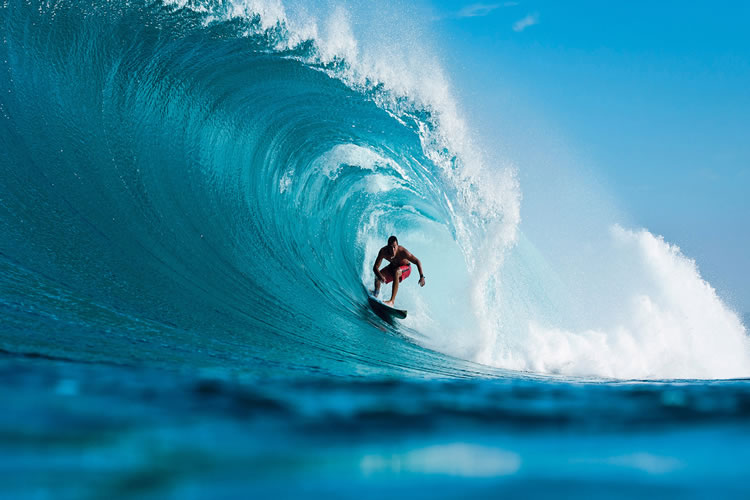
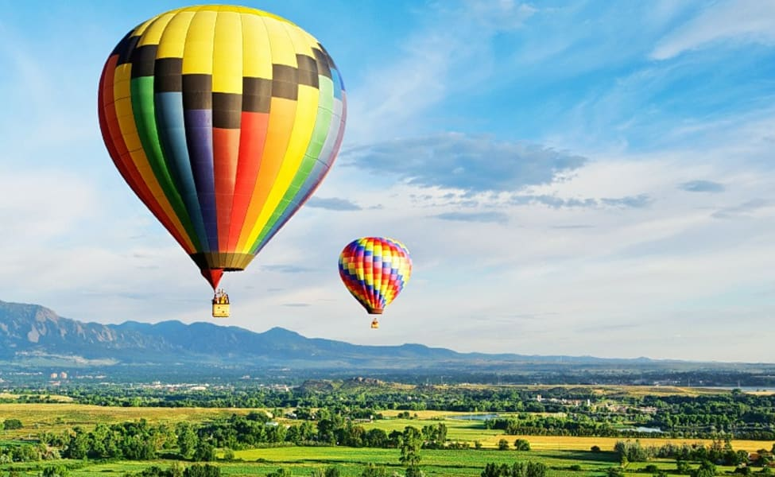
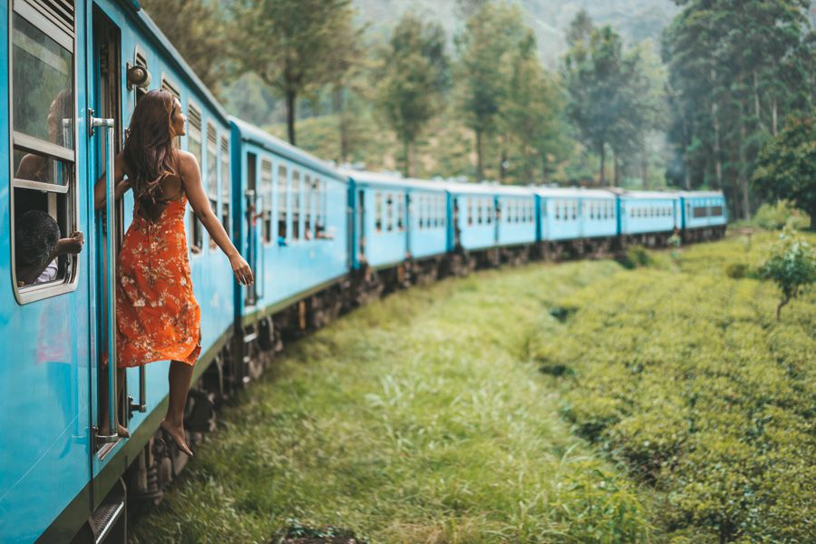
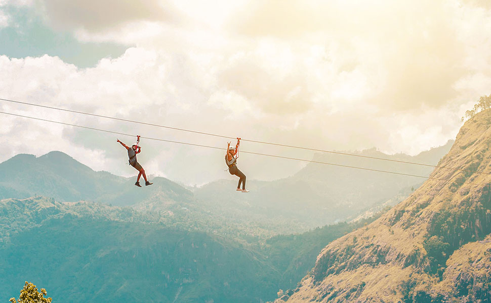
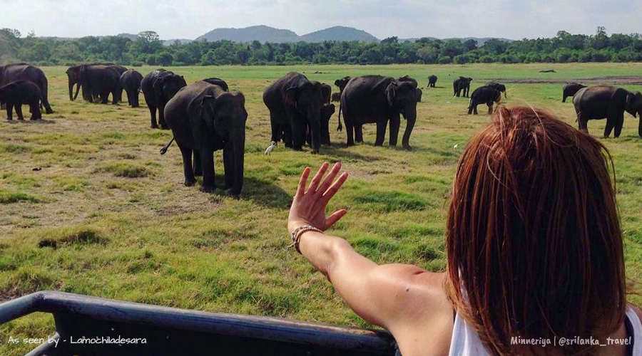
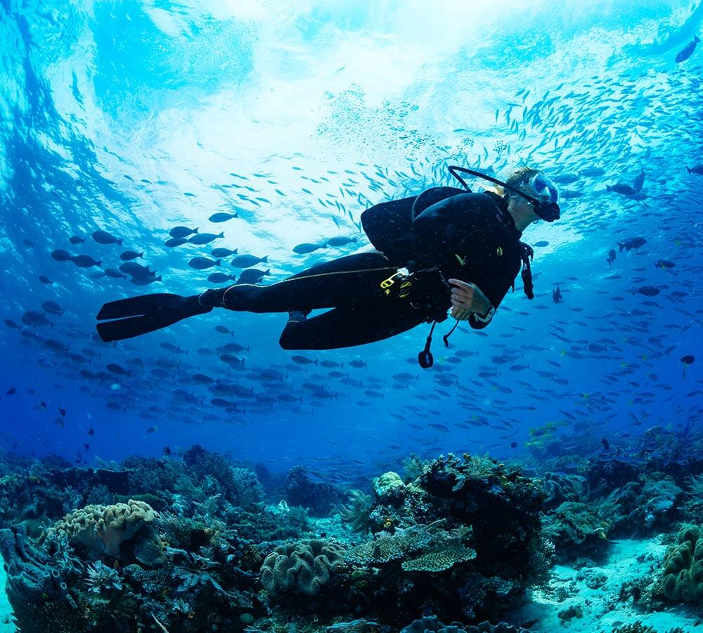
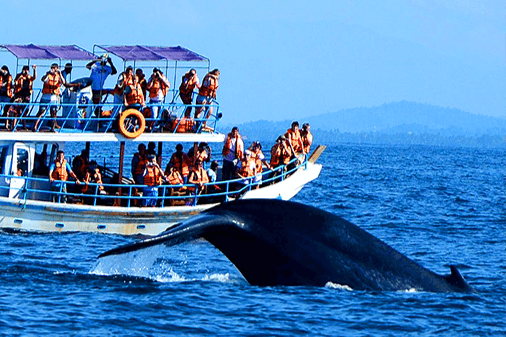

Best things to do in sri lanka
Surfing

Surfing in Sri Lanka is a nice mix of travel adventure, beautiful beaches, and wonderful surf. The surf conditions in Sri Lanka are not as
consistent as say Bali, but there are almost always surf waves somewhere in Sri Lanka.
The main surfing season for the south is from November to May – that’s when the waves are utter perfection. The best season on the east coast is from
April to October, when the waves are longer. Here’s what you need to know: there will always be waves somewhere.
The main patches for surfing are the southwest, south and east coasts. The most famous areas are Unawatuna and Hikkaduwa in the southwest,
Weligama in the south and Arugam Bay in the east. All areas have popular as well as more hidden spots. The waves in Sri Lanka are not the giant kind
like those in Hawaii or Western Australia, they are smaller and longer; one wave in Okanda (on the east coast) can be surfed for as long as 60 seconds
if your legs can handle it.
Hot air baloon

If you are lucky enough to visit the beautiful island of Sri Lanka then you should take the opportunity to see the wondrous sights from the air
starting from Kandalama, Dambulla in the Cultural Triangle.
Flying over the jungle you may see elephants roaming freely, variety of birds, wild life, water buffaloes standing in the paddy fields and
monkeys swinging from the trees.
After an exhilarating flight over the jungle you will be welcomed on landing by friendly villagers who are happy to meet and greet you.
Your Pilot will toast the flight with a glass of champagne after which our transport will take you back to your hotel. You will have the rest of
the day to visit around Sigiriya, Habarana and include a safari at Minneriya or Kaudulla National Parks.
Train Tour

Trains in Sri Lanka are a very adventurous travelling option and also the best way to explore the natural beauty of the country. By opting for a
rail tour in Sri Lanka you can plan your holiday by means of a very affordable mode of transport for exploring the country. Luxury and moderate
class government owned and private rail services are available to popular holiday destinations in Sri Lanka.
Kandy to Ella train trip is considered one of the most scenic train journeys in the world.The train would reach Ella approximately in six hours and
the most scenic part of the train journey is from Hatton to Haputale. It will be a good idea for travelers who go to Adam’s Peak in Maskeliya or
White Water Rafting in Kitulgala to join the train ride from Hatton station. During the journey the train goes passing lush greenish tea estates,
many tunnels, farming fields, villages, various types of forests etc.
Zip Line

A site set amidst the luscious green estates of Ella, exclusively designed for adventure enthusiasts and adrenaline junkies who prefer a not so ordinary
hillside experience.
Originated with the fastest and the longest zip line in Sri Lanka, now opened its doors to the world of adventure by
introducing range of activities to get the whole family and friends involved for one unforgettable experience.
Hiking

Sri Lanka's diversity of terrain provide the opportunity for amazing treks and hikes, especially in the Central Highlands. Trekking and hiking
through the paddy fields, tea plantations, spice gardens, waterfalls, streams, dense forests, hills and mountains of the tropical island of Sri Lanka
brings about a unique experience that cannot be obtained any other way.
For the keen hiker, there is a plethora of opportunities awaiting in Sri Lanka 's diverse and luscious hill country. The beautiful area of Haputale
and Diyatalawa, located in the hill country of Sri Lanka , provides a base from which to try out a wide variety of hiking and trekking tours
through jungle, across tea estates and up mountains. The river and numerous waterfalls in Sri Lanka are another key attraction that allows hikers
and trekkers to enjoy a refreshing dip en-route !
In the same area the Horton Plains National Park offers some excellent hikes in an unusual environment, characterised by forest patches, grasslands
and some high-altitude vegetation. Highlights include the dramatic 880 metre drop at World's End and the beautiful Baker's Falls.
WildLife Safari

A wide range of National Parks, nature reserves and safari lodges and camps have been established throughout Sri Lanka, covering vast areas of
bio-diverse terrain, all the way from Willpattu National Park in the north of the country, down to Yala National Park in the south with many others
in between. Plenty of wildlife for you to see and lots to do, and no, not about hunting that was done away with about a century ago, after the
Sri Lankan elephant population were decimated by big western game hunters. You're out there to enjoy, get close to and photograph Sri Lankan wildlife
and birds in their natural environment. On your Sri Lankan safari Tour you'll also tour through some outstanding scenery.
You'll see a lot of elephants and birds, be able to take lots of photographs, as well as experience our unique ever smiling mix of people and cultures.
You'll simply have a great time here!
Scuba Diving

There are many Scuba Diving sites in Sri Lanka that spread out across the Western, Southern and Eastern coasts of the island. These locations are
of such variety and beauty enabling even amateur scuba divers as well as the experienced ones revel in the opportunities presented.Sri Lanka’s Scuba
Diving sites offer opportunities for all to enjoy wreck diving, explore reefs and their abundance of marine life. Sri Lanka is an all year round
Scuba Diving destination. Most of the reputed dive centers offer PADI certifications that may take about 3 to 4 days to complete.
Scuba Diving operators generally have small boats (for about 6 divers) and larger boats for about 15 divers. You can reach these Scuba Diving Sites
within 10 to 45 minutes depending upon the distance to the location from the shore.
Whale Watching

The ever smiling, mischievous dolphins will put on a show while some of the oldest and the largest sea creatures, the humpback and the blue whales,
will nonchalantly glide past you, when you embark on a whale/ dolphin watching excursion off the Southern, Eastern or the West coast of Sri Lanka.
The ideal locations for whale watching would be Dondra Point (accessible from Galle, Hikkaduwa and Mirissa) and Trincomalee while the sea off
Kalpitiya teems with an abundance of dolphins.
With the whale watching season in Mirissa being in full swing and many local and foreign tourists gathering to the Mirissa harbor, The Sri Lanka
Coast Guards had increased their vigilance in monitoring the implementation of Sea Mammals Observation, Regulation and Control Regulations.
.png)